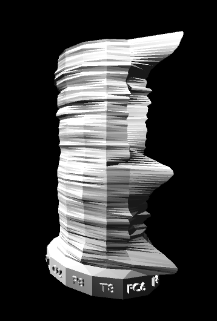
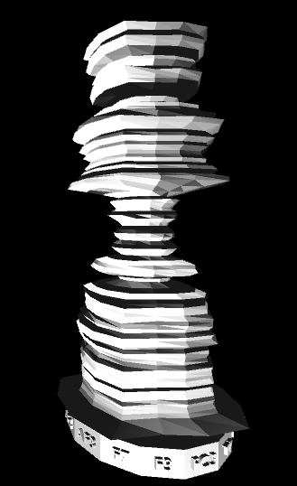
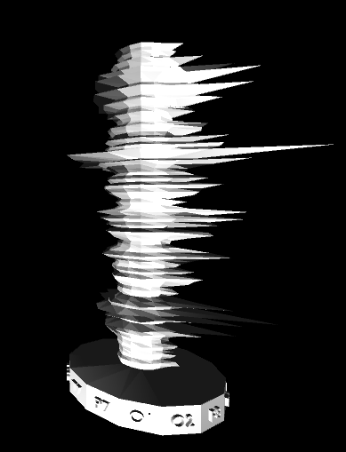
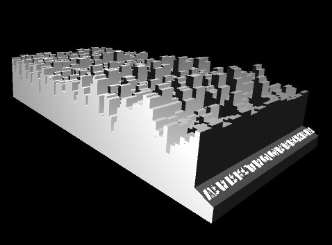
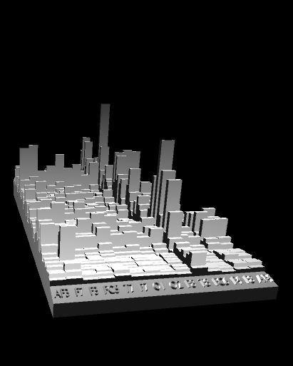
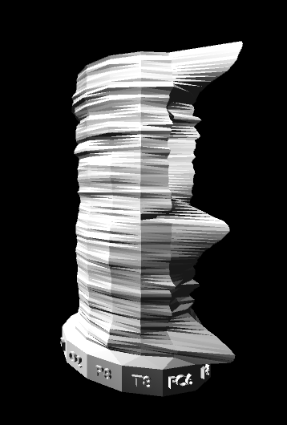
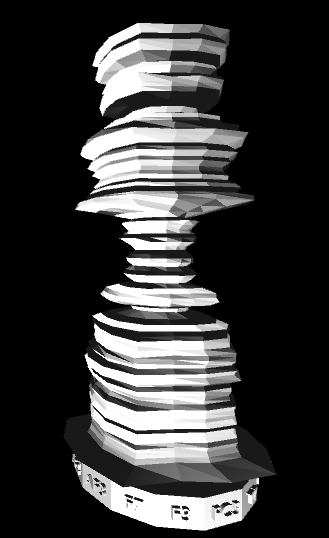
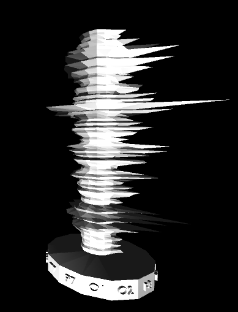
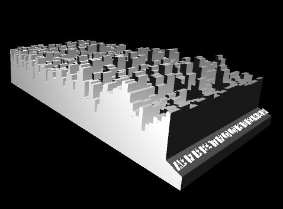
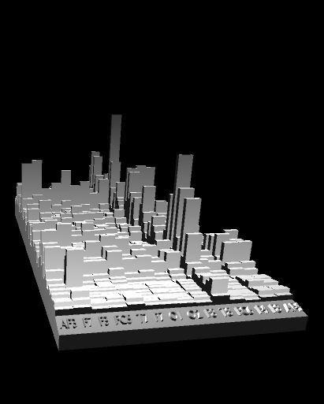

A desktop application that creates 3D models from EEG brain scans. The 3D models are saved as .stl files and can be printed using a 3D printer. Synaptograph was my capstone project at The University of Central Florida; I worked on it with four other Computer Science students. The project is sponsored by professors Ryan Byussens and Matt Dombrowski. We used the Emotiv Epoc+ headset to obtain the EEG brain scans.
The goal of our project was to represent the EEG scan data using 3D models in a way that is both accurate and visually pleasing. In addition to creating the models, our application used Independent Component Analysis (ICA) to remove the noise from the EEG recordings and Long-Short Term Memory (LSTM) to make the models more visually pleasing.
Implemented the graphics to display the 3D models using OpenGL
Created an algorithm to build 3D models from EEG data and attach the model base made in Blender to the models made in code
Implemented the ability to save the models as .stl files
UI art and Design
 








